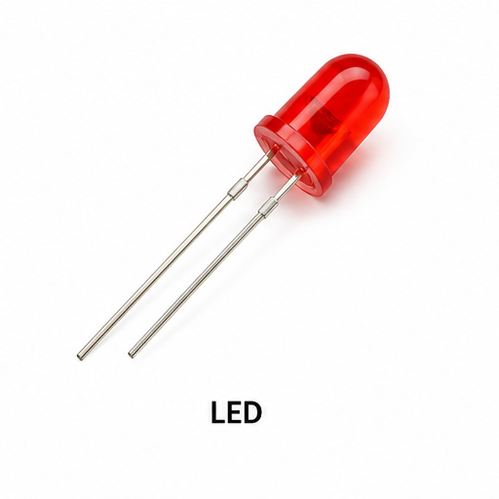

Morse_Code_Translator.ino

Morse Code Translator

To design and develop a Morse Code Translator using Arduino UNO R3, a push button, LED, buzzer and 16×2 I²C LCD.
The system converts short and long button presses into Morse code symbols and translates the entered patterns into English letters.
The decoded text is displayed on the LCD, while the LED and buzzer provide visual and audible feedback.
Morse code is a communication system that represents letters through combinations of short signals called dots and long signals called dashes.
In this experiment, a push button is used to enter Morse code symbols manually.
Arduino measures the duration of each button press using millis().
A press lasting less than 400 milliseconds is interpreted as a dot (.).
A press lasting 400 milliseconds or longer is interpreted as a dash (-).
The entered Morse symbols are stored in a character array and compared against the programmed Morse reference table.
When no additional symbol is entered for approximately two seconds after the previous button release, Arduino decodes the completed letter.
If the pause continues for approximately five seconds after the previous release, a space is inserted between words.
The first LCD row shows the current Morse code input. The second row shows the most recent decoded text.
The Serial Monitor displays the Morse pattern, decoded letters and accumulated text.
The word gap is measured from the last button release, so the additional time after the letter is decoded is approximately three seconds.

Measures button press duration, interprets Morse patterns and controls the outputs.

Used to enter short and long presses representing dots and dashes.

Provides visual feedback while the push button is pressed.

Limits the current flowing through the LED.

Produces an audible signal while the push button is pressed.

Displays the current Morse pattern and decoded English text.

Used for assembling the experiment connections.

Connect Arduino, the button, LED, buzzer and LCD.
Ensure the installed LiquidCrystal_I2C library supports lcd.init() and lcd.backlight().
| Push Button Terminal | Arduino Connection | Purpose |
|---|---|---|
| Terminal 1 | A0 | Button input |
| Terminal 2 | GND | Ground |
| LED Terminal | Arduino Connection |
|---|---|
| Anode (+) | D7 through 220Ω resistor |
| Cathode (−) | GND |
| Buzzer Terminal | Arduino Connection |
|---|---|
| Positive (+) | D8, if suitable for direct drive |
| Negative (−) | GND |
| LCD Terminal | Arduino Connection | Purpose |
|---|---|---|
| VCC | 5V | LCD power |
| GND | GND | Common ground |
| SDA | A4 | I²C data |
| SCL | A5 | I²C clock |
Verify the LCD I²C address before testing. Some LCD modules use an address different from 0x27.
The Arduino sketch switches D8 HIGH when the button is held, so the buzzer should be suitable for that type of control.
Use a buzzer that can be driven safely from the Arduino pin. If required, use an appropriate driver circuit.

When the button is pressed, Arduino records the current millis() value.
When it is released, the program subtracts the starting time from the release time.
Press Duration = Release Time − Press Start Time
Less than 400 ms → Dot
400 ms or longer → Dash
The Arduino sketch contains a lookup table with the Morse patterns for English letters A through Z.
| Letter | Morse Code |
|---|---|
| A | .- |
| B | -... |
| C | -.-. |
| D | -.. |
| E | . |
| H | .... |
| O | --- |
| S | ... |
| T | - |
After the configured letter gap, the decodeMorse() function compares the entered pattern with the lookup table.
If a match is found, the program returns the corresponding English letter.
If the pattern is not recognized, the function returns a question mark (?).
After the letter is decoded, a longer uninterrupted pause inserts a space into the decoded text.
The first LCD row displays the current Morse pattern, prefixed with Morse:.
The second LCD row displays up to the most recent 16 characters of the decoded text.
Arduino Experiment · Code Review
Morse Code Translator · Select a step to highlight and understand the complete Arduino program.
Choose a step to highlight the corresponding Arduino code.
Morse code uses different combinations of dots and dashes to represent letters.
millis() returns the number of milliseconds since Arduino began running the program.
The sketch records press and release timestamps to determine how long the button was held.
Mechanical push buttons may create rapidly changing signals when pressed.
The 30 ms debounce interval helps distinguish a stable press or release from contact bounce.
The sketch keeps the latest decoded characters in decodedText[].
When its buffer reaches capacity, older characters are removed to make room for new ones.
Try it: Enter the Morse sequence ... --- ... using the push button, with a letter gap between S, O and S. Observe the decoded output on the LCD and Serial Monitor.
MORSE TRANSLATOR Starting...
After approximately 1.5 seconds, the LCD is ready to accept Morse input.
Morse:.
Morse:-
Enter a dot followed by a dash, then wait for the letter gap.
Morse: A
| Letter | Morse Pattern | Button Presses |
|---|---|---|
| S | ... | Short, Short, Short |
| O | --- | Long, Long, Long |
| S | ... | Short, Short, Short |
Morse: SOS
| Button State | LED | Buzzer |
|---|---|---|
| Pressed | ON | ON |
| Released | OFF | OFF |
MORSE CODE TRANSLATOR Short Press = DOT Long Press = DASH Letter Gap = 2000 ms Word Gap = 5000 ms System Ready! Morse Input: . DOT Entered Morse Input: .- DASH Entered Decoded Letter: A Decoded Text: A
The Morse Code Translator experiment demonstrates how Arduino UNO can measure push button press duration and convert short and long signals into Morse code.
Arduino compares the entered dot-and-dash patterns with a Morse lookup table to identify English letters.
The LCD displays the current pattern and decoded text, while the LED and buzzer provide visual and audible feedback.
The experiment also demonstrates how timed pauses can separate letters and words.